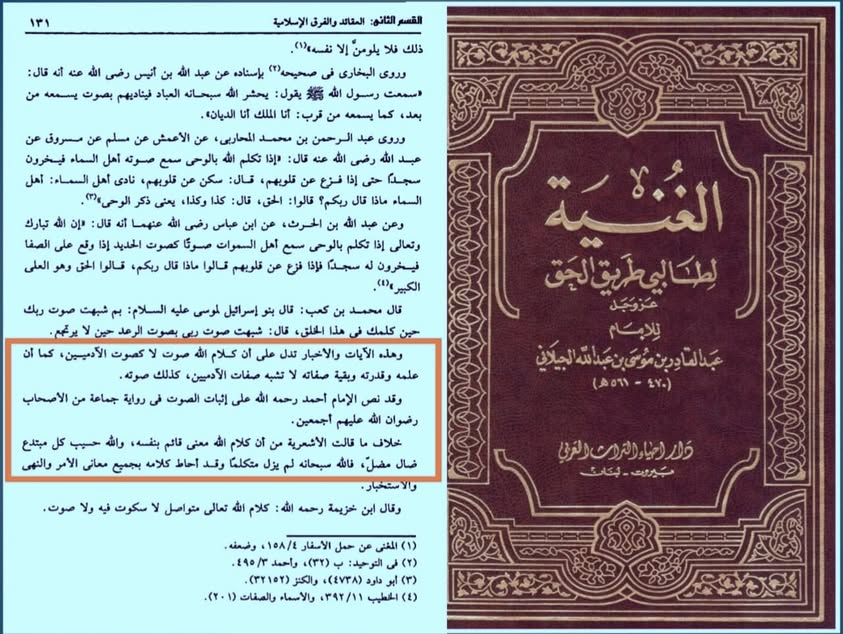

বড়পীর আব্দুল কাদির জিলানি রাহ-এর ভাষায় আশআরি আকিদাহ বেদআত ও পথভ্রষ্টতা। আল্লাহর…
৭ মে, ২০২৪
বড়পীর আব্দুল কাদির জিলানি রাহ-এর ভাষায় আশআরি আকিদাহ বেদআত ও পথভ্রষ্টতা। আল্লাহর কালামের ব্যাপারে নুসুস উল্লেখপূর্বক তিনি বলেন—
وهذه الآيات والأخبار تدل على أن كلام الله صوت لا كصوت الآدميين، كما أن علمه قدرته وبقية صفاته لا تشبه صفات الآدميين، كذلك صوته. وقد نص الإمام أحمد على إثبات الصوت في رواية جماعة من الأصحاب رضوان الله عليهم أجمعين. خلاف ما قالت الأشعرية من أن كلام الله معنى قائم بنفسه، والله حسيب كل مبتدع ضال مضل.
‘এসকল আয়াত ও বর্ণনা ইঙ্গিত করে যে, আল্লাহর কালামের (صوت) স্বর-ধ্বনি রয়েছে; তবে তা মানুষের স্বরের মতো নয়। ঠিক যেমন তাঁর জ্ঞান, কুদরত ও অন্যান্য গুণাবলি মানুষের গুণাবলির সঙ্গে সাদৃশ্যপূর্ণ নয়। একইভাবে, তাঁর স্বর-ও। ইমাম আহমদ রাহ. ‘স্বর’ সাব্যস্ত করার কথা তাঁর অনেক ছাত্রের বর্ণনায় রয়েছে। এটি আশআরিদের—আল্লাহ'র কালাম এমন অর্থ, যা তাঁর সত্তার সঙ্গে প্রতিষ্ঠিত— বক্তব্যের খেলাফ। আল্লাহ সকল বেদআতি, পথভ্রষ্ট ও পথভ্রষ্টকারীর হিসাব নেবেন।’ [গুনিয়াতুত তালিবিন— ১/১৩১]
বড়পীরের বিরুদ্ধে একটা ফতোয়া আসা কি সময়ের দাবি নয়?
বড়পীর আব্দুল কাদির জিলানি রাহ-এর ভাষায় আশআরি আকিদাহ বেদআত ও পথভ্রষ্টতা। আল্লাহর কালামের ব্যাপারে নুসুস উল্লেখপূর্বক তিনি বলেন—
وهذه الآيات والأخبار تدل على أن كلام الله صوت لا كصوت الآدميين، كما أن علمه قدرته وبقية صفاته لا تشبه صفات الآدميين، كذلك صوته. وقد نص الإمام أحمد على إثبات الصوت في رواية جماعة من الأصحاب رضوان الله عليهم أجمعين. خلاف ما قالت الأشعرية من أن كلام الله معنى قائم بنفسه، والله حسيب كل مبتدع ضال مضل.
‘এসকল আয়াত ও বর্ণনা ইঙ্গিত করে যে, আল্লাহর কালামের (صوت) স্বর-ধ্বনি রয়েছে; তবে তা মানুষের স্বরের মতো নয়। ঠিক যেমন তাঁর জ্ঞান, কুদরত ও অন্যান্য গুণাবলি মানুষের গুণাবলির সঙ্গে সাদৃশ্যপূর্ণ নয়। একইভাবে, তাঁর স্বর-ও। ইমাম আহমদ রাহ. ‘স্বর’ সাব্যস্ত করার কথা তাঁর অনেক ছাত্রের বর্ণনায় রয়েছে। এটি আশআরিদের—আল্লাহ'র কালাম এমন অর্থ, যা তাঁর সত্তার সঙ্গে প্রতিষ্ঠিত— বক্তব্যের খেলাফ। আল্লাহ সকল বেদআতি, পথভ্রষ্ট ও পথভ্রষ্টকারীর হিসাব নেবেন।’ [গুনিয়াতুত তালিবিন— ১/১৩১]
বড়পীরের বিরুদ্ধে একটা ফতোয়া আসা কি সময়ের দাবি নয়?
